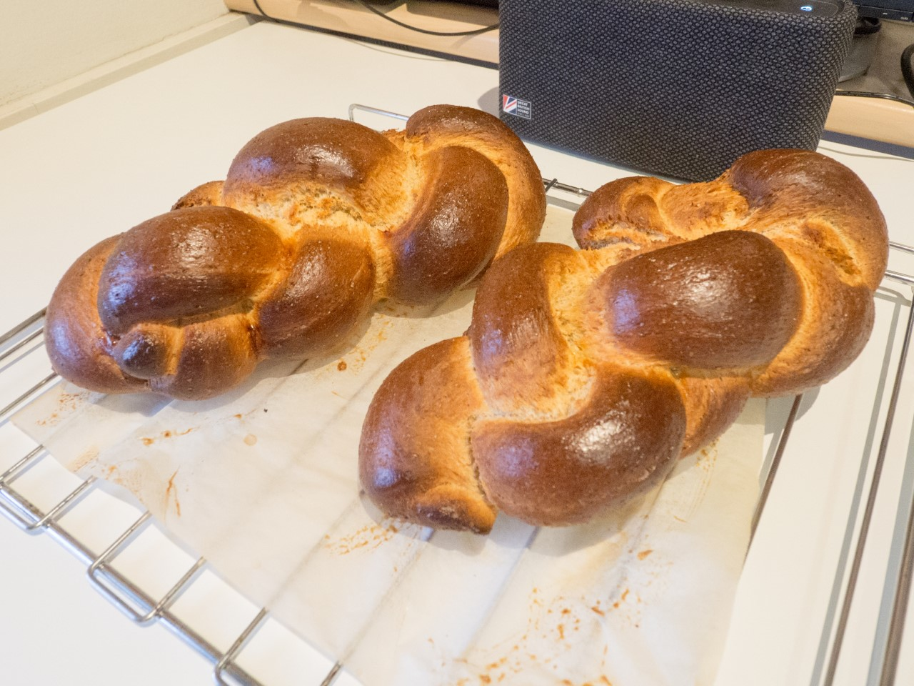

Butterzopf (Swiss Braided Bread)

Submitted by: Maurice Huguenin
Background
Zopf is one of the better known Swiss breads, baked in the form of a plait and traditionally eaten on Sunday mornings.
Ingredients
- 1kg white plain flour
- 3 sachets dry yeast
- 3 tea spoons salt
- 2 tea spoons sugar
- 125 g butter
- 600ml milk
- one egg
Instructions
- Mix the flour, dry yeast, salt and sugar in a large bowl
- Slowly melt the butter and add to the mixture
- Mix thoroughly before adding in the milk
- Mix the ingredients together with a spatula. When the dough has pulled together, turn it out onto a flat surface and knead until smooth and elastic, for about six to ten minutes
- Place the dough into a big bowl, cover with a damp cloth and let it rise at room temperature until double in size
- Pre-heat the oven to 220 °C
- Cut the dough into four pieces and braid into a Zopf (see pictures below)
- Place the dough onto a baking tray ligned with baking parchment and lightly brush with a whipped egg
- Bake the bread for 35 minutes on the second lowest rack. Tap the bottom of the Zopf and it will sound hollow when it is done.